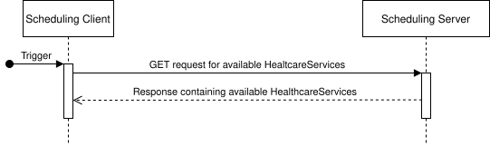
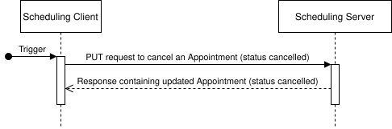
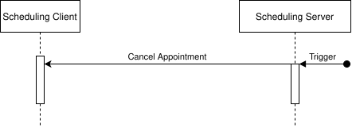
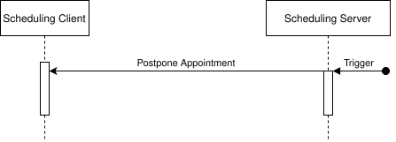
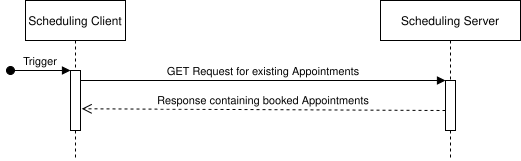

0.1.0 - ci-build
0.1.0 - ci-build
TCFHIRAGSchedulingR5 - Local Development build (v0.1.0) built by the FHIR (HL7® FHIR® Standard) Build Tools. See the Directory of published versions
This implementation guide supports the following interactions for a scheduling process.

A Scheduling Client can create a Patient on a Scheduling Server. This is a prerequisite for booking an Appointment in which this Patient participates. HL7® AT Core Patient Profile MUST be used by both the Scheduling Client for the request as well as the Scheduling Server in the response.

A Scheduling Client can fetch bookable HealthcareServices from a Scheduling Server. Search parameters of the HL7® AT Scheduling HealthcareService Profile can be used to filter the results.
\ ToDo: Example Requests
Depending on the scheduling scenario that is implementented ("peer-to-peer" appointment booking, availability of a central platform for scheduling, …), it might be necessary not only to find healthcare services that are offerd but also to find out which medical institution is offering them. Additionally, finding healthcare service providers that offer a service close to a location or within a certain zip-code area might be useful as well.
For such a purpose, this IG provides a new operation called $findHSP (find Healthcare Service Provider).
TODO: include diagram
This operation uses either a full HealthCareService resource as input parameter or dedicated codes for it like HealthcareService.category, HealthcareService.type or HealthcareService.specialty.
In addition to that a Scheduling Client can provide further filter criteria in its search like:
The response will be a Bundle consisting of the HealthcareService resource and a list of healthcare service providers (Organization, Practitioner, PractitionerRole) that offer the requested service.

After (optional) selection of a HealthcareSerice a Schedulung Client can fetch available Schedules. A schedule is a container for Slots, which is often displayed as a calendar in Software into which appointments can be booked. Search parameters of the HL7® AT Scheduling Schedule Profile can be used to filter the results.
\ ToDo: Example Requests

After selecting one or more Schedules, available Slots for this/those Schedules can be fetched. Each Slot represents a time slot for which an Appointment can be booked. Search parameters of the HL7® AT Scheduling Slot Profile can be used to filter the results.
ToDo: How are slots for video calls marked? Only implicitly via HealthcareService?

In this optional step, a Slot can be requested to be put on hold (i.e. reserved) by a Scheduling Client until the Appointment is booked. $hold is the corresponding operation definition. The Slot is identified either by a Reference or one or more Identifiers, which have to identify a single slot instance. The response contains the Slot resource and an OperationOutcome. In case of success, the status of the Slot is set to "busy-tentative". If the hold operation is rejected, the status of the Slot is set to "busy-unavailable".
ToDo: Discuss the duration for which a slot is held and whether this should be contained in the response.

The scheduling client books an appointment by sending an HL7® AT Scheduling Appointment Profile resource with status "proposed" to the Scheduling Server. The Scheduling Server returns a Parameters response containing the requested Appointment and an OperationOutcome. The Appointment resource will have an updated status of booked if the request is approved or "cancelled" if it is rejected. The corresponding operation definition is the $book operation.

To cancel an Appointment, the Scheduling Client sends an HL7® AT Scheduling Appointment Profile with its status set to "cancelled" or "entered-in-error". The Scheduling Server responds with the Appointment resource or an OperationOutcome in case of error. The Scheduling Server is responsible for notifying the participants of the Appointment.
ToDo: Do we need server-side cancellation?


Todo

To update an Appointment, a Scheduling Client sends a HL7® AT Scheduling Appointment Profile resource with updated attributes.
ToDo: Discuss restrictions on which fields can be updated.

Scheduling Clients can fetch existing Appointments from Scheduling Servers. Search parameters of the HL7® AT Scheduling Appointment Profile can be used to filter the results.
ToDo: Example Search URL